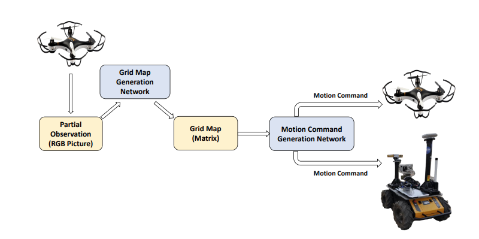

|
I am a Ph.D. candidate in the Department of Control Science and Engineering at Zhejiang University since Mar. 2021, advised by Prof. Yue Wang. Prior to this, I was a Master's candidate in the Department of Agricultural Mechanization and Automation at Zhejiang University from Sep. 2018, advised by Prof. Huanyu Jiang. During the period of Apr. 2019 to Feb. 2020, I served as an academic guest in the Intelligent Biomimetic Design Lab (IBDL) at Peking University, advised by Prof. Guangming Xie. Earlier, I graduated with honors and obtained my B.Eng in Agricultural Mechanization and Automation from Northeast Agricultural University in 2018. My research interests lie in Reinforcement Learning, Legged Robot, and Computer Vision. |
{kind=link}
 |
pdf |
ieee |
abstract |
bibtex
Small-scale legged robots have found widespread utilization in various industrial and biomedical applications due to their compact size and superior locomotion capabilities. Reducing the number of actuators is often desirable to decrease the robot’s size and weight, which comes at the expense of the robot’s workspace. Our study proposes a method to enhance the mobility of small-scale legged robots with limited degrees of actuators (DoAs) by co-optimizing both morphology parameters and control policy. The co-optimization is formulated as a bi-level optimization problem, where the control policy is designed using deep reinforcement learning algorithms and central pattern generators (CPGs) at the lower level. The inclusion of CPGs significantly speeds up training and enables the application of simulation results in real-world scenarios. At the upper level, morphology optimization is achieved through Bayesian optimization based on dual-networks. This approach eliminates the need to train a policy for each morphology candidate from scratch, leveraging previous experience to enhance efficiency. Through simulation and physical experiments, the effectiveness of our proposed approach is demonstrated, showcasing its ability to discover optimal morphology and gait for small-scale legged robots with limited DoAs. These findings have potential long-term impacts on small-scale legged robot design and locomotion control.
@ARTICLE{10324384,
author={Chen, Ci and Xiang, Pingyu and Zhang, Jingyu and Xiong, Rong and Wang, Yue and Lu, Haojian},
journal={IEEE/ASME Transactions on Mechatronics},
title={Deep Reinforcement Learning Based Co-Optimization of Morphology and Gait for Small-Scale Legged Robot},
year={2023},
volume={},
number={},
pages={1-12},
keywords={Bayesian optimization; co-optimization; deep reinforcement learning; small-scale legged robot},
doi={10.1109/TMECH.2023.3330427}}
|
|
pdf |
abstract |
code
Significant progress has been made in enhancing the motion capabilities of quadruped robots in unstructured environments due to advancements in hardware and control algorithms. However, limited research has been conducted on the fault-tolerant control of quadruped robots, which is crucial for their operation in remote or extreme environments like disaster sites. In this paper, we primarily focus on fault-tolerant strategies for common joint-stuck situations. By leveraging the static stability of quadruped robots, it becomes possible to adjust their control policies and enable them to continue following predetermined trajectories. We introduce a contextual meta-reinforcement learning (Meta-RL) method to design fault-tolerant policies. This method infers task-related latent vectors from the context to assist in training the policy network, ensuring both conciseness and optimality in various situations. Additionally, to expedite algorithm training, we propose a reference action generator (RAG). To validate the proposed algorithm, extensive simulations and physical experiments are conducted. The results demonstrate that our method allows the robot to maintain its trajectory even when faced with motor locking. Furthermore, our method outperforms all baseline algorithms, highlighting its superiority in terms of fault tolerance. |
|
|
pdf |
ieee |
abstract |
bibtex
With the increasing computing power, using data-driven approaches to co-design a robot's morphology and controller has become a promising way. However, most existing data-driven methods require training the controller for each morphology to calculate fitness, which is time-consuming. In contrast, the dual-network framework utilizes data collected by individual networks under a specific morphology to train a population network that provides a surrogate function for morphology optimization. This approach replaces the traditional evaluation of a diverse set of candidates, thereby speeding up the training. Despite considerable results, the online training of both networks impedes their performance. To address this issue, we propose a concurrent network framework that combines online and offline reinforcement learning (RL) methods. By leveraging the behavior cloning term in a flexible manner, we achieve an effective combination of both networks. We conducted multiple sets of comparative experiments in the simulator and found that the proposed method effectively addresses issues present in the dual-network framework, leading to overall algorithmic performance improvement. Furthermore, we validated the algorithm on a real robot, demonstrating its feasibility in a practical application.
@INPROCEEDINGS{10341983,
author={Chen, Ci and Xiang, Pingyu and Lu, Haojian and Wang, Yue and Xiong, Rong},
booktitle={2023 IEEE/RSJ International Conference on Intelligent Robots and Systems (IROS)},
title={C2: Co-design of Robots via Concurrent-Network Coupling Online and Offline Reinforcement Learning},
year={2023},
volume={},
number={},
pages={7487-7494},
keywords={Training;Sociology;Morphology;Reinforcement learning;Robot sensing systems;Control systems;Task analysis},
doi={10.1109/IROS55552.2023.10341983}}
|
|
|  |
pdf |
ieee |
abstract |
bibtex
For heterogeneous unmanned systems composed of unmanned aerial vehicles (UAVs) and unmanned ground vehicles (UGVs), using UAVs serve as eyes to assist UGVs in motion planning is a promising research direction due to the UAVs' vast view scope. However, its limitations on flight altitude prevent the UAVs from observing the global map. Thus motion planning in the local map becomes a Partially Observable Markov Decision Process (POMDP) problem. This paper proposes a motion planning algorithm for heterogeneous unmanned systems under partial observation from UAV without reconstruction of global maps. Our algorithm consists of two parts designed for perception and decision-making, respectively. For the perception part, we propose the Grid Map Generation Network (GMGN), which is used to perceive scenes from UAV's perspective and classify the pathways and obstacles. For the decision-making part, we propose the Motion Command Generation Network (MCGN). Due to the addition of the memory mechanism, MCGN has planning and reasoning abilities under partial observation from UAVs. We evaluate our proposed algorithm by comparing it with baseline algorithms. The results show that our method effectively plans the motion of heterogeneous unmanned systems and achieves a relatively high success rate.
@INPROCEEDINGS{9341326,
author={Chen, Ci and Wan, Yuanfang and Li, Baowei and Wang, Chen and Xie, Guangming and Jiang, Huanyu},
booktitle={2020 IEEE/RSJ International Conference on Intelligent Robots and Systems (IROS)},
title={Motion Planning for Heterogeneous Unmanned Systems under Partial Observation from UAV},
year={2020},
volume={},
number={},
pages={1474-1479},
keywords={Decision making;Markov processes;Unmanned aerial vehicles;Land vehicles;Planning;Classification algorithms;Intelligent robots},
doi={10.1109/IROS45743.2020.9341326}}
|
|
pdf |
ieee |
abstract |
bibtex
In the process of operating, robots will inevitably encounter damage due to external or internal factors, such as motor blockage. For the legged robot, when the motors of joints are failing, if other motors still act according to the original instructions, it will cause the robot to deviate from the predetermined trajectory, which is unacceptable for legged robots. Inspired by the fact that the model trained by supervised learning on the training set can be generalized to the testing set, our goal is to obtain a dynamic model that can be generalized to all kinds of motor damage situations. It can predict what state will be reached in the next step when an action is applied in the current state. With this dynamics model, we use the Monte Carlo particles to optimize the feasible actions in a model predictive control (MPC) fashion and achieve the expected goal (such as making the robot walk in a straight line). The comparison experiment adopts two meta-learning model and vanilla dynamics model approaches, the results show that the proposed method is superior to the three baselines, which proves the effectiveness of the proposed method.
@INPROCEEDINGS{9872230,
author={Chen, Ci and Wang, Dongqi and Yu, Jiyu and Xiang, Pingyu and Lu, Haojian and Wang, Yue and Xiong, Rong},
booktitle={2022 IEEE International Conference on Real-time Computing and Robotics (RCAR)},
title={Fast Adaptation Dynamics Model for Robot’s Damage Recovery},
year={2022},
volume={},
number={},
pages={45-50},
keywords={Legged locomotion;Training;Adaptation models;Monte Carlo methods;Dynamics;Supervised learning;Reinforcement learning},
doi={10.1109/RCAR54675.2022.9872230}}
|
|
|
pdf |
ieee |
abstract |
bibtex
Motor locking is a common issue in quadruped robots that can have serious consequences if the robot continues executing its original commands. However, the static stability of the quadruped allows for the flexibility to adjust the robot's control policy so that it can maintain movement along a predetermined trajectory. In this paper, we introduce a residual meta-reinforcement learning method comprising a trajectory generator and a meta-reinforcement learning corrector. The trajectory generator generates a reference joint position, while the corrector utilizes contextual reasoning to determine the appropriate action in the event of a motor locking. This action is employed to rectify the reference joint position, resulting in a fault-tolerant control strategy for the robot. We conducted comprehensive simulation experiments to validate our proposed algorithm, which demonstrates that the robot can still follow the predefined trajectory, even in the presence of a motor locking. Moreover, our proposed approach outperforms all baseline algorithms.
@INPROCEEDINGS{10318421,
author={Chen, Ci and Li, Chao and Xiong, Rong and Gao, Hongbo and Wang, Yue},
booktitle={2023 IEEE International Conference on Unmanned Systems (ICUS)},
title={A Residual Meta-Reinforcement Learning Method for Training Fault-Tolerant Policies for Quadruped Robots},
year={2023},
volume={},
number={},
pages={919-924},
keywords={Legged locomotion;Training;Fault tolerance;Fault tolerant systems;Reinforcement learning;Generators;Trajectory;Quadruped Robots;Reinforcement Learning;Fault Tolerance},
doi={10.1109/ICUS58632.2023.10318421}}
|
|
|
pdf |
webpage |
abstract |
bibtex
Stem diameter is an important parameter in the process of plant growth which can indicate the growth state and moisture content of the plant, its automatic detection is necessary. Traditional devices have many drawbacks that limit their practical uses in general cases. To solve those problems, a stem diameter inspection spherical robot was developed in this study. The particular mechanism of the robot has turned out to be suitable for performing monitoring tasks in a greenhouse mainly due to its spherical shape, small size, low weight, and traction system that does not produce soil compacting or erosion. The mechanical structure and hardware architecture of the spherical robot were described, and the algorithm based on binocular stereo vision was developed to measure the stem diameter of the plant. The effectiveness of the prototype robot was confirmed by field experiments in a tomato greenhouse. The results showed that the machine measurement data was linearly correlated with the manual measurement data with R2 of 0.9503. There was no significant difference for each attribute between machine measurement data and manual measurement data (sig> 0.05). The results showed that this method was feasible for nondestructive testing of the stem diameter of greenhouse plants.
@article{2019Design,
title={Design and test of stem diameter inspection spherical robot},
author={ Quan, Longzhe and Chen, Ci and Li, Yajun and Qiao, Yajing and Sun, Wenfeng },
journal={International Journal of Agricultural and Biological Engineering},
volume={12},
number={2},
pages={141-151},
year={2019},
}
|
|
|
pdf |
ieee |
abstract |
bibtex
Self-assessment rules play an essential role in safe and effective real-world robotic applications, which verify the feasibility of the selected action before actual execution. But how to utilize the self-assessment results to re-choose actions remains a challenge. Previous methods eliminate the selected action evaluated as failed by the self-assessment rules, and re-choose one with the next-highest affordance (i.e. process-of-elimination strategy), which ignores the dependency between the self-assessment results and the remaining untried actions. However, this dependency is important since the previous failures might help trim the remaining over-estimated actions. In this paper, we set to investigate this dependency by learning a failure-aware policy. We propose two architectures for the failure-aware policy by representing the self-assessment results of previous failures as the variable state, and leveraging recurrent neural networks to implicitly memorize the previous failures. Experiments conducted on three tasks demonstrate that our method can achieve better performances with higher task success rates by less trials. Moreover, when the actions are correlated, learning a failure-aware policy can achieve better performance than the process-of-elimination strategy.
@INPROCEEDINGS{10160889,
author={Xu, Kechun and Chen, Runjian and Zhao, Shuqi and Li, Zizhang and Yu, Hongxiang and Chen, Ci and Wang, Yue and Xiong, Rong},
booktitle={2023 IEEE International Conference on Robotics and Automation (ICRA)},
title={Failure-aware Policy Learning for Self-assessable Robotics Tasks},
year={2023},
volume={},
number={},
pages={9544-9550},
keywords={Recurrent neural networks;Automation;Affordances;Task analysis;Robots},
doi={10.1109/ICRA48891.2023.10160889}}
|
|
|
pdf |
abstract
Legged robot proved their capability to cross complex terrain in recent research, yet the autonomy of robots on discrete terrain still needs to be enhanced since it requires a full stack framework. This paper introduces a real-time motion and foothold planning framework tailored for legged robots navigating uneven terrains, such as stepping stones. Our approach addresses the critical challenges of determining feasible global paths and local footholds to enhance autonomous mobility across complex landscapes. By using a sampling-based global path planner integrated with terrain segmentation and the robot’s kinematic model, our framework swiftly generates viable navigation paths. Concurrently, it utilizes a Mixed Integer Programming (MIP) methodology for real-time foothold optimization, ensuring the robot’s stability and safety through dynamic terrain interaction. Finally, an execution layer including Model Predictive Control (MPC) and Whole-Body Control (WBC) generates the robots’ motion. Simulation and real-world experiments demonstrate that our framework improves legged robots’ adaptability on discrete terrains. |